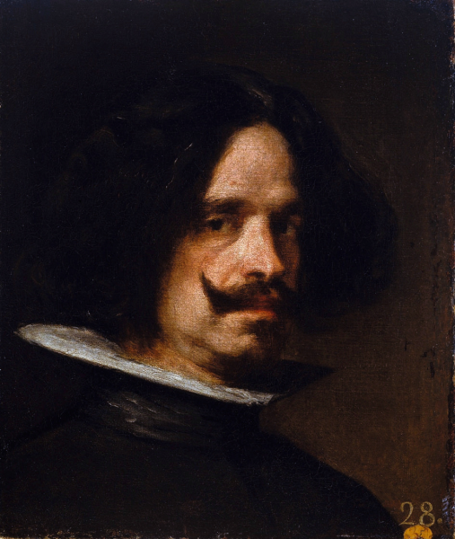

Biografía
Diego Rodríguez de Silva y Velázquez (Sevilla, bautizado el 6 de junio de 15991-Madrid, 6 de agosto de 1660), conocido como Diego Velázquez, fue un pintor barroco español considerado uno de los máximos exponentes de la pintura española y maestro de la pintura universal.
Pasó sus primeros años en Sevilla, donde desarrolló un estilo naturalista de iluminación tenebrista, por influencia de Caravaggio y sus seguidores. A los 24 años se trasladó a Madrid, donde fue nombrado pintor del rey Felipe IV y cuatro años después fue ascendido a pintor de cámara, el cargo más importante entre los pintores de la corte. A esta labor dedicó el resto de su vida. Su trabajo consistía en pintar retratos del rey y de su familia, así como otros cuadros destinados a decorar las mansiones reales. Su presencia en la corte le permitió estudiar la colección real de pintura que, junto con las enseñanzas de su primer viaje a Italia, donde conoció tanto la pintura antigua como la que se hacía en su tiempo, fueron influencias determinantes para evolucionar a un estilo de gran luminosidad, con pinceladas rápidas y sueltas. En su madurez, a partir de 1631, pintó de esta forma grandes obras como La rendición de Breda. En su última década su estilo se hizo más esquemático y abocetado, alcanzando un dominio extraordinario de la luz. Este período se inauguró con el Retrato del papa Inocencio X, pintado en su segundo viaje a Italia, y a él pertenecen sus dos últimas obras maestras: Las meninas y Las hilanderas.
Su catálogo consta de unas 120 o 130 obras. El reconocimiento como pintor universal se produjo tardíamente, hacia 1850.2 Alcanzó su máxima fama entre 1880 y 1920, coincidiendo con la época de los pintores impresionistas franceses, para los que fue un referente. Manet se sintió maravillado con su obra y le calificó como «pintor de pintores» y «el más grande pintor que jamás ha existido». La parte fundamental de sus cuadros que integraban la colección real se conserva en el Museo del Prado en Madrid.